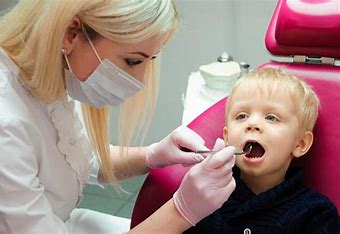

KIDS
Little Timmy's first tooth finally wiggled free after days of anxious wiggling and excited anticipation. His gap-toothed grin lit up the room as he proudly displayed the tiny treasure he had carefully placed under his pillow the night before. Across the street, Sarah was diligently brushing her teeth, determined to keep her smile as bright and healthy as the sticker chart on her bathroom wall promised. In the dentist's office downtown, Dr. Patel patiently reassured a nervous toddler in the waiting room, promising stickers and praise for sitting so still during their check-up.
As the sun dipped below the horizon, casting a warm orange glow over the neighborhood, children scattered like fireflies in the fading light. In the midst of this youthful exuberance, a group of friends gathered in Max's backyard, their laughter echoing off the wooden fence. Max, with his unruly mop of brown hair and freckled cheeks, proudly displayed his newly acquired set of braces, a shiny constellation of metal that gleamed in the twilight. His friends, Emily and Jake, marveled at the transformation, poking fun at the awkward way Max tried to talk without lisping. Meanwhile, a few blocks away, little Emma sat cross-legged on her bedroom floor, a tooth fairy book open in her lap. She gingerly traced the outline of a loose tooth with her finger, wondering what magic the fairy would bring when it finally fell out. Her older brother, Alex, leaned against the door frame, teasing her about the gap that would soon grace her smile. Down the street, Mrs. Johnson lovingly brushed her youngest daughter's hair while reminding her to brush her teeth before bed. The little girl, Lily, nodded obediently, her mind already wandering to the bedtime story awaiting her. In the bustling city center, Dr. Gupta, a pediatric dentist, patiently explained to a worried parent the importance of regular check-ups and good dental habits for their child's growing teeth. The parent, grateful for the reassurance, nodded attentively, mentally noting to schedule their next appointment.
How do I care for my child's primary teeth?
Little Timmy's first tooth finally wiggled free after days of anxious wiggling and excited anticipation. His gap-toothed grin lit up the room as he proudly displayed the tiny treasure he had carefully placed under his pillow the night before. Across the street, Sarah was diligently brushing her teeth, determined to keep her smile as bright and healthy as the sticker chart on her bathroom wall promised. In the dentist's office downtown, Dr. Patel patiently reassured a nervous toddler in the waiting room, promising stickers and praise for sitting so still during their check-up.